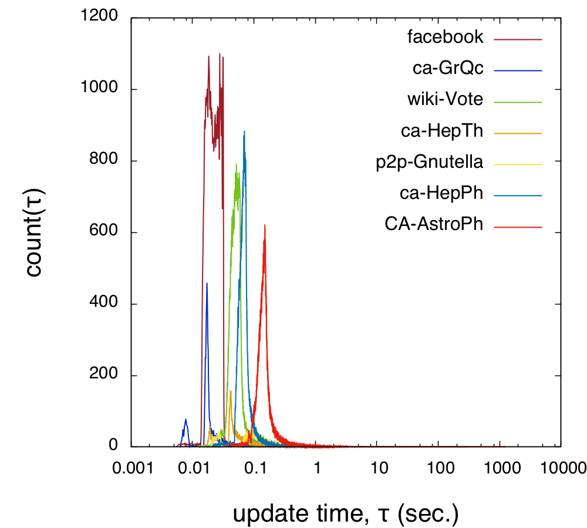

NetworkL brings (L)ongitudinal network analysis on your desk
NetworkL includes a set of optimized algorithms and data structures which allow to carry out network analysis of large time-varying networks on user-level workstations.
NetworkL reduces the memory load of Distance Matrix up to 50% and performs re-computation of shortest paths in centiseconds. For this reason it is particularly suitable for the analysis of (L)ongitudinal network data-sets.
NetworkL is experimental you are free to improve it and contribute on the github project page. You can also send an email or come and see us at the Startup-Network Lab in Catania, Sicily.
Example usage:
import networkx as nx
import networkl as nl
from random import randrange
N=500
G = nx.erdos_renyi_graph(N,0.1) #create a graph
SparseD = nl.sparse_distance_matrix(G) #compute the Sparse Distance Matrix
# optionally you can use the full matrix (faster but more memory expensive)
#D = nx.all_pairs_shortest_path_length(G)
new_edges = [(randrange(N),randrange(N)) for c in range(100)]
for i,j in new_edges:
print 'adding edge (%s,%s), updating Distance Matrix...'%(i,j)
nl.update_distance_matrix(G,SparseD,i,j,mode='add') #add edges and update Distance Matrix
print SparseD[5][12] #accessing distance valuesInstallation:
with pip:
pip install networkl
from source code:
#from terminal
wget https://github.com/networkl/networkl/archive/master.zip
unzip master
cd networkl-master/
python setup.py install
Performance Testing:
| Dataset Name | Nodes | Edges | Percentage of memory used. (full N*N matrix is 100 %) | Average single-edge update time |
| p2p-Gnutella04 | 10,876 | 39,994 | 40.71 % | < 0.1 sec. |
| ca-GrQc | 4,158 | 13,428 | 27.23 % | < 0.1 sec. |
| ca-HepTh | 8,638 | 24,827 | 27.84 % | < 0.1 sec. |
| Facebook Egonet | 4,039 | 88,234 | 35.93 % | < 0.1 sec. |
| wiki-Vote | 7,066 | 100,736 | 49.32 % | < 0.1 sec. |
| ca-HepPh | 11,204 | 117,649 | 31.45 % | < 0.1 sec. |
| CA-AstroPh | 17,903 | 197,031 | 40.58 % | < 0.1 sec. |
Distribution of update times
This test has been conducted starting from a minimum spanning tree and adding all remaining edges to rebuild the entire graph. The figure below shows the distribution of update times, remarkably the average update time is below 0.1 seconds for all data sets.
NetworkL is based on:
Ramalingam, G., & Reps, T. (1996). On the computational complexity of dynamic graph problems. Theoretical Computer Science, 158(1), 233-277.Other related references:
Kas, M., Wachs, M., Carley, K. M., & Carley, L. R. (2013). Incremental algorithm for updating betweenness centrality in dynamically growing networks. Advances in Social Networks Analysis and Mining (ASONAM), 2013 IEEE/ACM International Conference on (pp. 33-40). IEEE.Puzis, R., Elovici, Y., Zilberman, P., Dolev, S., & Brandes, U. (2014). Topology manipulations for speeding betweenness centrality computation. Journal of Complex Networks, cnu015.